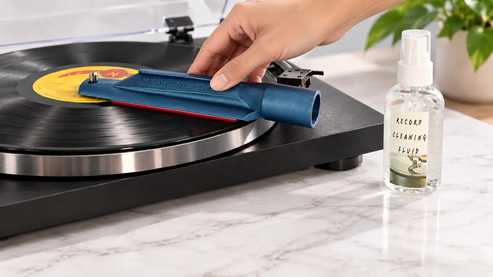
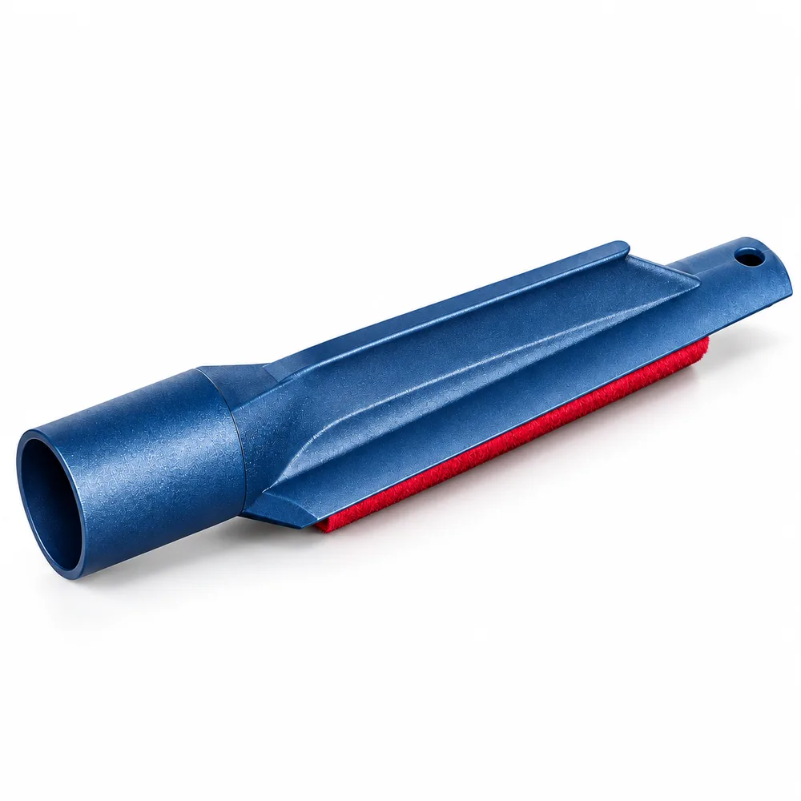
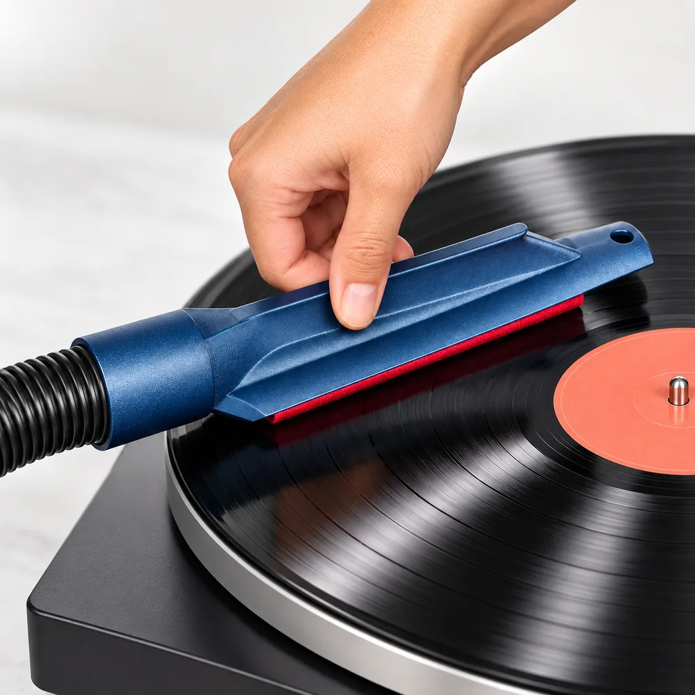
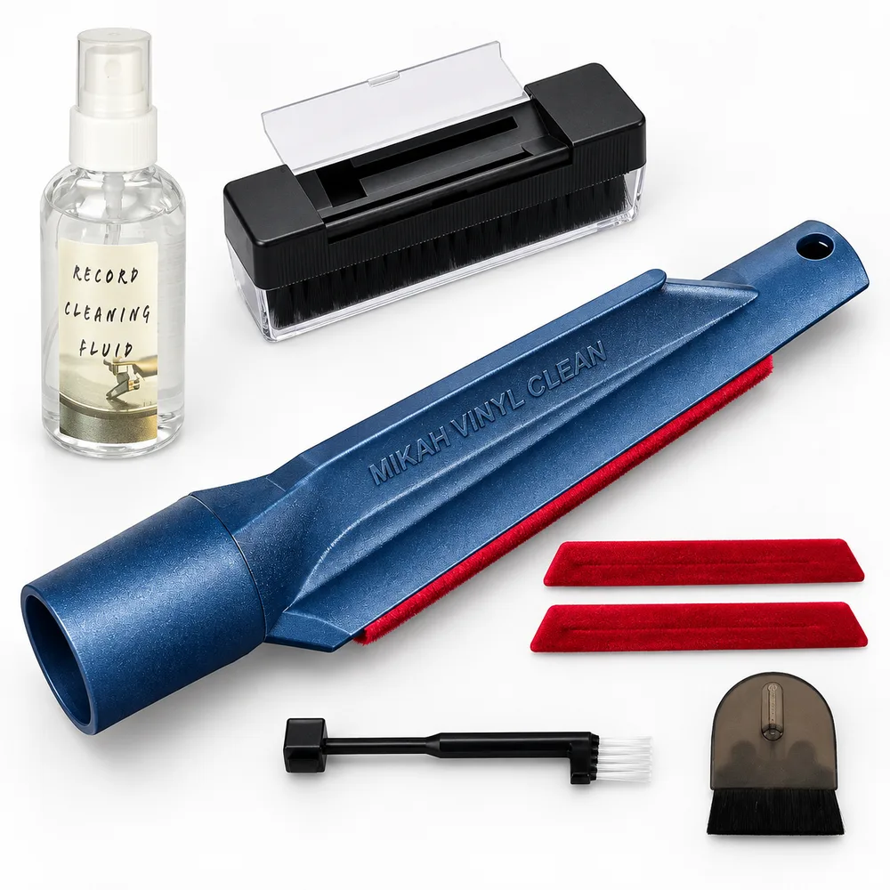
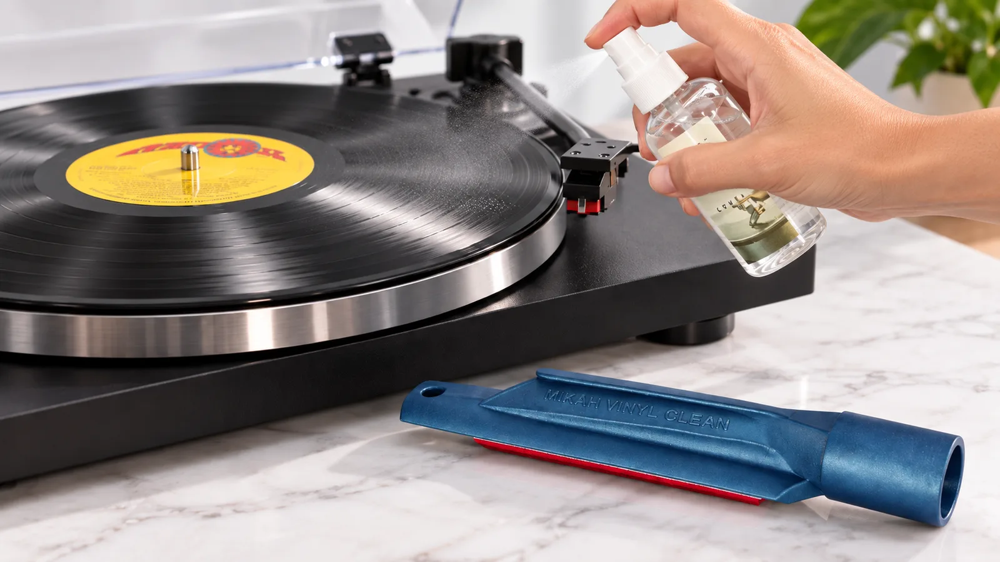

Vinyl Record Cleaning Kit With a Vacuum Brush
Wet clean your records, then remove the used fluid and loosened dirt with a vinyl record cleaner that connects to your existing wet/dry vacuum. Designed for 12-inch LPs and a 1.5-inch vacuum hose.

The problem with wiping
A dry brush is fine for dust. It does nothing for the grime packed into the grooves, the residue and the oils from handling that make a record crackle however carefully you treat it.
Wipe a wet cloth across a record and a lot of that dirt just moves around, then settles back in as the vinyl dries. Dedicated vacuum record cleaning machines fix this by pulling the liquid off the surface. They also cost hundreds of dollars and take up a shelf.

A Vacuum Record Cleaner for 12-Inch LPs
Mikah Vinyl Cleaner is an LP record cleaner with a vacuum record cleaning brush and replaceable velvet pads. This vinyl cleaning brush connects to a 1.5-inch wet/dry vacuum hose to remove used cleaning fluid from the playing surface of 12-inch records.
You wet the record and work the fluid in. Then you run the pad over the surface with the vacuum on. The fluid and the loosened dirt go into the vacuum, not back into the grooves.
How to Clean Vinyl Records With a Vacuum Brush
Simple, repeatable deep cleaning in four straightforward steps.
Brush off dust
Use the dry brush first so you aren’t turning loose dust into mud.
Wet the record
Spray on a record cleaning fluid and spread it gently across the playing surface.
Vacuum it off
Set the brush down using the center spindle as your guide, connect a 1.5 inch hose, and move it slowly and lightly over the wet surface.
Rinse and dry
Follow your cleaning fluid’s rinsing instructions. If a rinse is required, use distilled water and vacuum it off. Let the record dry completely before playback.

Record Care Guide
How to Clean Vinyl Records at Home
Learn how to remove dust, wet clean your records, and remove used cleaning fluid by hand or with vacuum extraction. Follow our step-by-step guide, with photos and practical tips.
Read the full cleaning guideWhy people buy it
Removes dirt, doesn't move it
The vacuum step is the one most home cleaning routines are missing. It removes used cleaning fluid and loosened contaminants from the playing surface.
Replaceable self-adhesive pad
When the velvet wears out over time, peel it off and press on a fresh one instead of replacing the whole tool.
Compact & drawer-friendly
It’s small. It lives in a drawer. There’s no bulky motorized machine to find room for.
Uses equipment you have
Use this vinyl record vacuum attachment with a wet/dry vacuum and a compatible 1.5-inch hose. The vacuum and turntable are separate equipment.
Made in the USA
Proudly designed, tested, and assembled domestically with over 500 units in record collector hands since 2021.
Vinyl Record Cleaning Solution
Our kits include a vinyl record cleaning solution for wet cleaning vinyl records. Spread the record cleaning fluid gently over the playing surface, then use the vacuum brush to remove the used solution and loosened dirt. Follow the instructions supplied with your chosen kit.
What’s Included in the LP Cleaning Kit?
Mikah vinyl cleaning kit options combine the vacuum brush with record cleaning supplies. Depending on the option selected, your LP cleaning kit can include:
- Mikah vacuum record cleaning brush
- Record cleaning solution
- Dry dust brush
- Spare self-adhesive velvet pads
Check your selected eBay or Etsy listing for the exact contents and quantities. Vacuum and turntable are not included.
Where it came from
We started selling these in 2021. The idea was that vacuum cleaning works, and you shouldn’t need a full machine to get it. Since then more than 500 have gone out, first through Amazon and now on eBay and Etsy. The feedback is the part we like best. People tell us how it sits in the hand and how well it seals against the hose. Quite a few have asked for a 7 inch version, and that one is on the way.


Frequently Asked Questions
Will it fit my vacuum hose? ↓
It has a 1.5-inch hose connection for a compatible wet/dry vacuum. Check the hose fit before use and follow your vacuum manufacturer’s instructions for collecting liquid.
Does it work on 7 inch records? ↓
Right now it’s made for 12 inch records. A 7 inch version is on the way.
Can I use my own cleaning fluid? ↓
You can use a record-safe vinyl cleaning solution suitable for vacuum cleaning. Follow the fluid manufacturer’s directions, including any rinsing requirements. The kits include our record cleaning fluid.
How do I replace the pad? ↓
Peel off the worn pad and press a fresh self-adhesive one into place. Replacement pads are sold separately.
Is this the same as a record cleaning machine? ↓
No. A dedicated machine is more automatic. This is a smaller, cheaper way to get the same vacuum step, using equipment you already own.
What is a record cleaner vacuum attachment?
A record cleaner vacuum attachment connects a record-cleaning brush to an external wet/dry vacuum. Mikah uses a compatible 1.5-inch hose to remove used cleaning fluid and loosened dirt from 12-inch LPs.
Can this LP record cleaner repair scratches?
Cleaning can remove loose dirt and residue, but it does not repair scratches or worn grooves. Some surface noise may remain after cleaning.